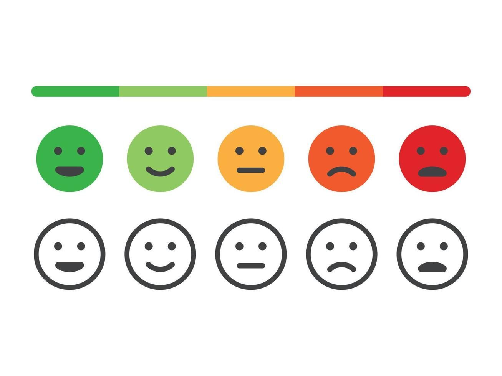

SYMH

Mood Tracker
Here is Your Mood Tracker, Tick the Boxes that Apply to you!
American Psychological Association
Here are some statistics about recent studied Stress levels
Today I Felt Happy!
Today I Felt Average!
Today I Felt Sad!
Today I Felt Depressed!
Today I Felt Angry!
Submit Your Answers Here!
Menu
Home Page
Personal Journal
SYMH